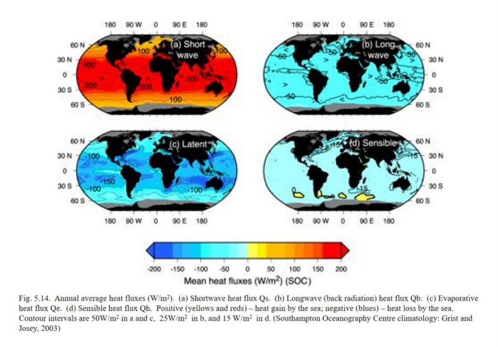

1.How deep is a typical mixed layer if mixed by wind? How deep can it reach if driven by cooling?
The wind mixing is typically on the order of hundreds of meters; the cooling-driven convection mixing can reach kilometer-scale, and in extremely high-latitude deep convection areas, it can even reach several kilometers.
2.What are the typical vertical temperature and salinity profiles in the subtropical and subpolar regions of the North Pacific?
In the subtropical region of the North Pacific Ocean, the surface seawater is warm and has a relatively high salinity. The temperature drops rapidly through a strong thermocline, and the salinity usually reaches its maximum at the surface while it is at its lowest in the deep water or middle layer. In the North Pacific near the polar regions, the surface seawater is colder and more freshwater; the thermocline is weaker, or there may be a deep temperature inversion phenomenon. Salinity generally increases with depth, and in the obvious salinity transition zone, it rises, which helps maintain the stratified structure of the water body.
3.What are the dominant regions of net evaporation in the ocean?
The regions where net evaporation is dominant in the ocean are mainly controlled by the atmospheric circulation and are concentrated in the subtropical high-pressure belt, the trade wind belt, and some semi-enclosed marginal seas with strong evaporation. In general, the dominant areas of ocean net evaporation are in a latitudinal band pattern, with the core located in the subtropical oceans of the north and south, and the most typical ones are the subtropical North Atlantic Ocean, the Red Sea, the Persian Gulf, and the Mediterranean Sea.
4.What are the key components of the Mixed Layer heat budget.
The heat budget for a particular body of water: Qt=Qs+Qb+Qe=Qh+Qv, where Qt is the total rate of gain or loss of heat of the body of water.
Qs: Rate of inflow of solar energy through the sea surface (short-wave radiation).
Qb: Net rate of heat loss by the sea as long-wave radiation to the atmosphere and space (black radiation).
Qe: Rate of heat loss/gain by evaporation/condensation (the latent heat flux).
Qh: Rate of heat loss/gain through the sea surface by conduction (the sensible heat flux).
Qv: rate of heat loss/gain by a water body due to currents (the advective term).
5.Is the North Atlantic Ocean saltier or fresher on average than the Pacific? Why?
The North Atlantic is saltier on average than the North Pacific. The main reason is that the Atlantic Ocean has net evaporation, the Pacific Ocean has net precipitation, combined with the high-salt input from the Mediterranean Sea and the formation of deep water in the North Atlantic, which together maintain the salinity difference between the two oceans.
6.What regions of the ocean are characterized by large differences from summer to winter? What regions have the least seasonal variability?
The greatest seasonal variations are observed in the mid-latitude western boundary currents, marginal seas, shallow seas and the North Indian Ocean monsoon region of the Northern Hemisphere; the smallest seasonal changes are found in the tropical warm pool.
7.Please describe the two processes that maintain the thermocline.
1. Surface buoyancy input and stable stratification
Heating at the sea surface causes the surface seawater to warm and become lighter; freshwater inputs such as precipitation and melting ice reduce the salinity and density of the surface water. The deeper water below is relatively cold and heavy, so the density increases with depth, forming a stable stratification. This stable stratification inhibits vertical mixing, making it difficult for the warm surface water to exchange with the cold deep water, allowing the thermocline to exist.
2. Wind-generated Ekman suction and vertical advection-diffusion equilibrium
Wind stress curl drives Ekman suction: in the subtropics, the surface water converges and sinks, causing the thermocline to deepen; in the tropics and some high latitudes, Ekman divergence causes upwelling, bringing cold water to the surface, causing the thermocline to rise. At the same time, in the classic one-dimensional thermocline theory, the slow vertical advection of cold water and the downward turbulent diffusion of heat balance each other, maintaining the temperature and depth structure of the thermocline.
8.What factors determine the heat budget terms, Qs, Qb, Qe and Qh, respectively? Make clear the importance of each factor of each term.
Qs: Rate of inflow of solar energy through the sea surface (short-wave radiation). The solar altitude angle (latitude, season and time of day) and cloud cover are particularly important.
Qb: Net rate of heat loss by the sea as long-wave radiation to the atmosphere and space (black radiation). SST affects the upward radiation of the ocean surface; cloud cover, atmospheric temperature and water vapor content affect downward radiation.
Qe: Rate of heat loss/gain by evaporation/condensation (the latent heat flux). The difference between wind speed and sea surface saturated specific humidity and the specific humidity of the air near the sea surface is the direct controlling factor.
Qh: Rate of heat loss/gain through the sea surface by conduction (the sensible heat flux). The temperature difference between the sea and the air and wind speed are the main factors.
9.What are the ranges of the magnitude of the four terms? For each term, please specify the location and value of the maximum and minimum center.
Qs: 0 to more than 200 W/m2. The maximum values (more than 200W/m2) are mainly located in the subtropical regions of the Southern Hemisphere. The minimum (0-50 W/m2 value is located in the surrounding seas of the polar regions.
Qb: -100 to 0 W/m2. The maximum value (-25 to 0 W/m2) is located in the tropical rainy and humid zone near the equator. The minimum value (-100 to -75 W/m2) is located in the dry waters of the subtropical zone.
Qe: -200 to 0 W/m2. The maximum value (-50 to -0 W/m2) is located in most of the high-latitude seas. The minimum value (-200 to -150 W/m2) is located in the subtropical and tropical areas with intense evaporation.
Qh: -60 to 15 W/m2. The maximum value (0 to 15 W/m2) is located in a local area of the Southern Ocean. The minimum value (-200 to -150 W/m2) is located in near the Gulf Stream and the Black Current.
EOF£ºEmpirical Orthogonal Functions (EOF) are the most commonly used method for spatiotemporal data dimensionality reduction and modal decomposition in Earth sciences such as meteorology, oceanography, and climatology. Essentially, EOF decomposes a set of data varying over time and space into several mutually orthogonal "spatial patterns" and their corresponding "temporal coefficients."
